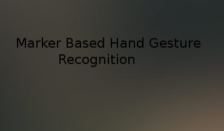

	<script type="text/javascript">$(function() {

					$('.two').poptrox({
						caption: function($a) { return $a.next('h3').text(); },
						overlayColor: '#2c2c2c',
			            type: "iframe",
			            mainClass: "mfp-fade",
			            removalDelay: 160,
			            preloader: true,
						overlayOpacity: 0.85,
						popupCloserText: '',
						popupLoaderText: '',
						selector: '.work-item a.image',
						usePopupCaption: true,
						usePopupDefaultStyling: false,
						usePopupEasyClose: false,
						usePopupNav: false,
						usePopupEasyClose:  true,
						windowMargin: (skel.breakpoint('small').active ? 0 : 50)
					});

				});</script>

<script type="text/javascript">
	
	$(function(){ /* to make sure the script runs after page load */

    $('a.read_more').click(function(event){ /* find all a.read_more elements and bind the following code to them */

        event.preventDefault(); /* prevent the a from changing the url */
        
        //$(this).parents('.one').find('.more_text').show(); /* show the .more_text span */
        $(this).parents('.one').find('.more_text').css('display','unset');
        $(this).parents('.one').find('.actions').css('display','none');
        

    });

});
</script>

				<section class="one">
						<header class="major">
							<h2>Simultaneous Localization and Mapping for Multiple Robots</h2>
						</header>
						<p>

Multi-robot SLAM is very important in Co-operative robotics. Multiple robots can
explore the environment more robustly and efficiently than a single robot. To work
together they need to build a global map using all the local maps. In this paper, we
demonstrate that our algorithm works faster than the existing algorithms for the
map merging.</p>
						
				</section>
<section class="one">
<header class="major">
							<h2>Human Computer Interaction Using Marker Based Hand Gesture Recognition</h2>
</header>

Undergrad Thesis.
<section class ="two">
						<div class="row">
							<article class="6u 12u$(xsmall) work-item">
								 <a class="image fit thumb" data-poptrox="youtube" href="https://www.youtube.com/uJTT3ethSUk/autoplay=1">
								 
								 </a>
								<!-- <a href="images/fulls/01.jpg" class="image fit thumb"></a> -->
								<h3>Marker Based Hand Gesture Recognition</h3>
								
							</article>
						</div>
	</section>
	<p>
		Abstract— Human Computer Interaction (HCI) has been redefined in this era. People want to interact with their devices in such a way that has physical significance in the real world, in other words, they want ergonomic input devices. In this paper, we propose a new method of interaction with computing devices having a consumer grade camera,		
		<span class="more_text">
        that uses two colored markers (red and green) worn on tips of the fingers to generate desired hand gestures, and for marker detection and tracking we used template matching with kalman filter. We have implemented all the usual system commands, i.e., cursor movement, right click, left click, double click, going forward and backward, zoom in and out through different hand gestures. Our system can easily recognize these gestures and give corresponding system commands. Our system is suitable for both desktop devices and devices where touch screen is not feasible like large screens or projected screens.&nbsp;[<a href="https://github.com/siam1251/HandGestureRecognition/tree/master">code</a>]
    	</span>
    </p>
	<ul class="actions">
				<li><a href="#" class="read_more button">Read More</a></li>
	</ul> 
				

				
</section>
<section class="one">
<header class="major">
							<h2>Bear Detection</h2>
						</header>
						<p>
				 Group project for Machine Learning (CMPUT 551).Bear classification is a tasking of predict whether an image contains the bear object
or not. The problem is challenging because the large variance of bear color
appearance and size, which attracts attentions of researchers from both computer
vision and machine learning. In this project,
we explored two popular machine learning techniques one is convolution neural network(CNN) and other is Support Vector Maching(SVM). The CNN feature based SVM classifier performs best.</p>
</section> 
<section class="one">
<header class="major">
							<h2>Gender and age group classification</h2>
</header>
<p>
application of Gaussian Markov Random Fields to build functional connectivity
models that can be used as classifiers using resting-state fMRI data. These models
present at least three advantages: 1) There is a natural mapping from brain data to
the graphical model. 2) There are efficient algorithms to train the model. 3) It is
possible to directly evaluate model fit of the data. We test our methodology in two
binary problems: gender classification (male vs. female) and age group classification (people younger than 10 vs people of at least 17 years old).
</p>
</section>

<section class="one">
<header class="major">
							<h2>3D object Reconstruction and the existing algorithms comparison</h2>
</header>
<p>
 Group project for the course Computer vision.
Live motion and structure estimation from a single moving video camera has potential applications in domains such as robotics, wearable computing, augmented reality and the automotive sector. In this project, we compared the accuracy and performance of existing real time 3D reconstruction algorithm. There are many existing systems like DTAM, PTAM, Microsoft Photosynth, KinectFusion. We studied different existing application for 3d reconstruction but in our project, we only compared the result of these two applications, PTAM and DTAM.
</p>
</section>

<section class="one">
<header class="major">
							<h2>SLAM using Recursive Bayesian Filter</h2>
</header>
<p>
We used sensor odometry and visual images to build robot poses and constraints and
relies on Bayesian filtering to estimate loop closure probability
</p>
</section>
<section class="one">
<header class="major">
							<h2>Auto-pilot</h2>
</header>
<p>
We demonstrated this project in the NCFRN Field trial 2015. We implemented it for Husky and Kingfisher robots. We select the route in Google map then robot follows the map by itself.
</p>
</section>

